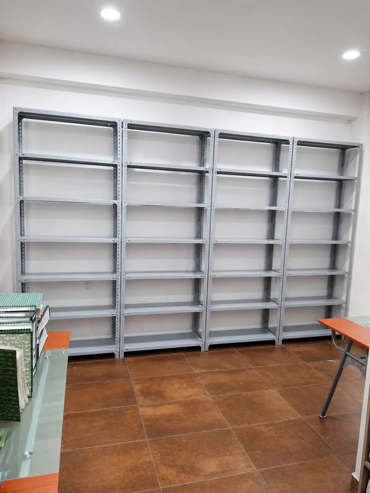
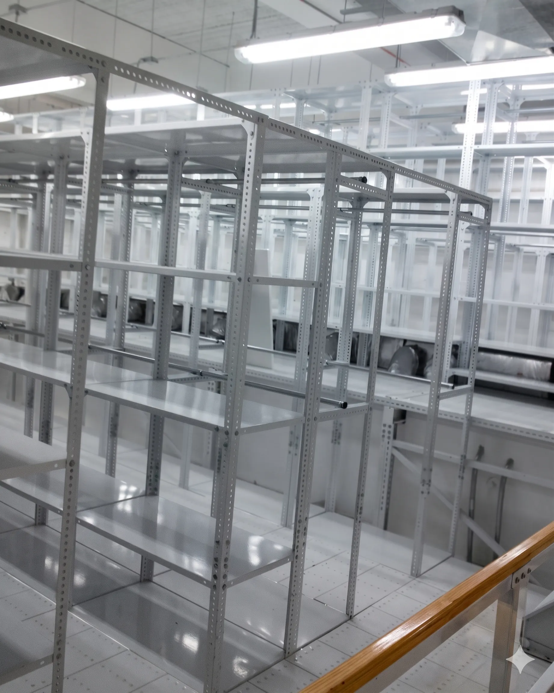
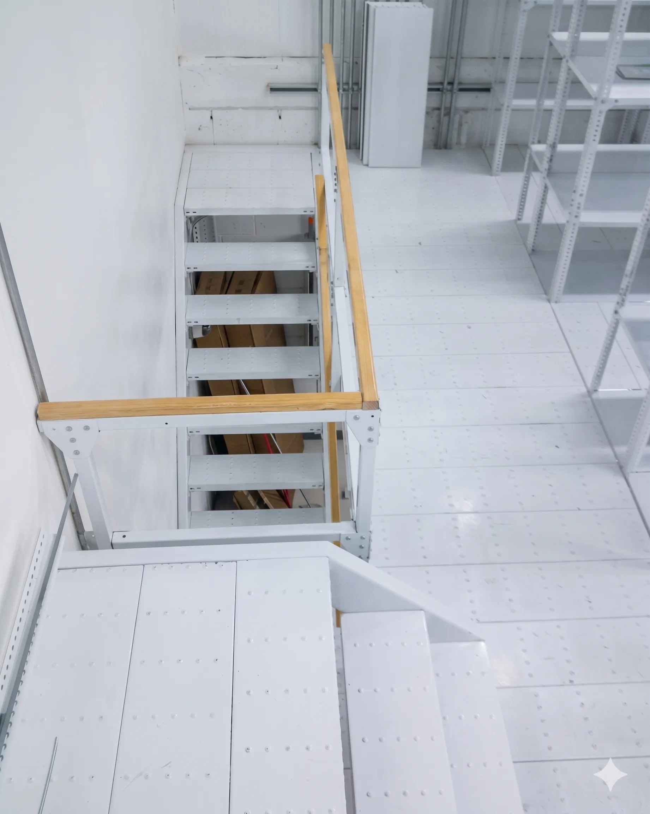
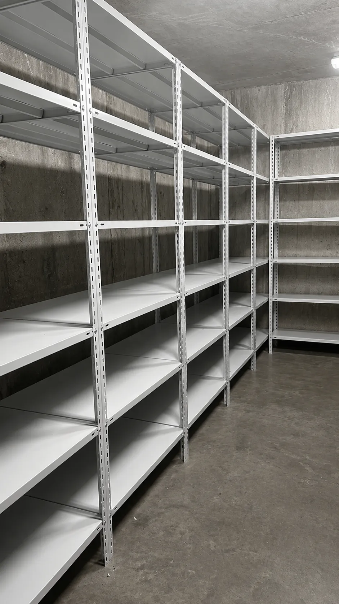

Estantería de Picking
Eficiencia y orden para el acceso manual. Diseñadas para optimizar las operaciones de surtido y preparación de pedidos, nuestras estanterías combinan versatilidad absoluta con una rigidez estructural óptima en formatos muy dinámicos.
Formatos Flexibles y Adaptables
Nuestros sistemas modulares permiten un ajuste rápido de niveles según las dimensiones cambiantes de tu inventario. Son la solución idónea para CEDIS de e-commerce, refaccionarías y líneas operativas manuales.


Modulación
Análisis de flujos de picking y dimensiones de cajas.

Manufactura
Producción de postes y entrepaños reforzados.

Surtido Listo
Montaje rápido y organización inmediata de niveles.
Documentación Técnica
Catálogo Oficial IDEA 2026
PDF • Especificaciones de carga y perfiles estructurales